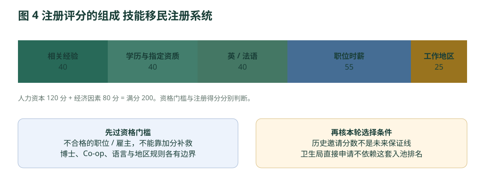

三 两大类的办理逻辑与核心条件
两大类的资格、雇主、职业和联邦衔接
3.1 Skills Immigration：先核人、职位、雇主和身份
以下通用条件与具体分支条件通常必须同时满足。少数OR替代与例外逐项列明；技能移民注册系统（Skills Immigration Registration System，SIRS）得分不能补救不合格的国家职业分类（National Occupational Classification，NOC）或雇主。
| 条件 | 规则与例外 | 要留下什么证据 |
|---|---|---|
| 工作地点与定居 | 真实打算在不列颠哥伦比亚省（British Columbia，BC）生活、工作并建立经济联系。通常不能主要在省外履行职责；不接受为省外组织直接日常监督的安排。 | 真实不列颠哥伦比亚省（British Columbia，BC）工作地点、居住/搬迁计划、工作与雇主文件。 |
| 在加身份 | 不得非法工作；境内须有合法身份或符合指南的及时恢复申请条件。未决难民申请、遣返令和不可入境另有排除。 | 护照、全部许可、提交回执和到期时间；恢复不产生工作权。 |
| 全职offer | 单一常年岗位，平均每周≥30小时；一般无结束日期。须在注册前取得雇主支持。 | 双方签字、公司抬头的offer，职责、时薪/年薪、工时、地点和期限。 |
| 有限期offer例外 | 仅附录A指定38个国家职业分类（National Occupational Classification，NOC）及职业条件：至少365天职位，正式申请时至少剩120天。公立大学41200另需博士；教师职位须公立K–12。 | 具体合同起止日、院校/雇主性质、必要学位；完整名单见职业页。 |
| 语言 | 培训、教育、经验与职责等级（Training, Education, Experience and Responsibilities，TEER） 2–5四项加拿大语言基准（Canadian Language Benchmarks，CLB）4。培训、教育、经验与职责等级（Training, Education, Experience and Responsibilities，TEER） 0/1注册时通常无需成绩，除非主张语言分；省可在审理中要求。不列颠哥伦比亚省快速通道衔接选项（Express Entry British Columbia，EEBC）、执照、院校有独立门槛。 | 有效测试；不能把网页简表“加拿大语言基准（Canadian Language Benchmarks，CLB） 4”理解为所有高技能职业统一规则。 |
| 测试和有效期 | 加拿大英语能力指数考试（Canadian English Language Proficiency Index Program，CELPIP） General、雅思考试（International English Language Testing System，IELTS） General Training、培生英语考试（Pearson Test of English，PTE） Core、法语评估考试（Test d’évaluation de français，TEF） Canada、法语知识考试（Test de connaissance du français，TCF） Canada；两年有效。入池语言分要求注册时有效；最低语言是资格时，申请时也要有效。 | 雅思考试（International English Language Testing System，IELTS） Academic、One Skill Retake、培生英语考试（Pearson Test of English，PTE） Academic不可替代本项移民考试。 |
| 经验 | 一般为真实有薪工作。技术工人类别（Skilled Worker，SW）需近十年累计至少两年全职等值培训、教育、经验与职责等级（Training, Education, Experience and Responsibilities，TEER）0–3经验，不要求这两年全部和offer同国家职业分类（National Occupational Classification，NOC）。相关经验加分另算。 | 近十年履历、雇主证明、工资/税务、工时和职责；不能用头衔或自写简历单独证明。 |
| 学习与Co-op | 普通学签期间工作不接受为技能移民（Skills Immigration，SI）经验/评分。完成学业后，已完成的有薪、全职≥30小时、技术职业Co-op可按条件计入。 | 毕业证、学校Co-op说明、薪资和工时；不要将所有在读兼职计入。 |
| 博士例外 | 加拿大公立大学完成博士；或持博士并有不列颠哥伦比亚省（British Columbia，BC）公立大学41200 offer的情形，可按指南考虑博士科研/课程经验，即使无薪。 | 博士学位、科研/课程性质、大学和职位证明；不是普通硕士例外。 |
| 工资与资格 | 工资须在WorkBC/Job Bank当地职业区间、与同等本地员工和雇主薪酬结构一致；职业要求的学历/训练/执照独立满足。 | 不把小费、加班、奖金、佣金、食宿补贴计基本工资。监管机构可出具即将满足资质的第三方证明；特别硬性名单仍按专条。 |
§3.1–3.9，§4.1原页 15博士与Co-op原页 19附录A原页 61
展开：加拿大语言基准（Canadian Language Benchmarks，CLB） 4的考试分项，以及最低家庭收入
| 考试 | 听 | 读 | 写 | 说 |
|---|---|---|---|---|
| 雅思考试（International English Language Testing System，IELTS） General Training | 4.5 | 3.5 | 4.0 | 4.0 |
| 加拿大英语能力指数考试（Canadian English Language Proficiency Index Program，CELPIP） General | 4 | 4 | 4 | 4 |
这是加拿大语言基准（Canadian Language Benchmarks，CLB）4最低分示例，不是雅思总分4，也不是学校录取要求。培生英语考试（Pearson Test of English，PTE）/法语评估考试（Test d’évaluation de français，TEF）/法语知识考试（Test de connaissance du français，TCF）按当次适用换算表逐项核。语言表原页 17
| 家庭人数 | 大温年收入 加元（Canadian Dollar，CAD） | 不列颠哥伦比亚省（British Columbia，BC）其他地区 加元（Canadian Dollar，CAD） |
|---|---|---|
| 1 | 31,264 | 26,057 |
| 2 | 38,922 | 32,437 |
| 3 | 47,851 | 39,878 |
| 4 | 58,096 | 48,418 |
| 5 | 65,892 | 54,914 |
| 6 | 74,315 | 61,935 |
| 7 | 82,739 | 68,955 |
最后一行为7人或以上。按支持雇主的正常税前年薪，加符合条件的在不列颠哥伦比亚省（British Columbia，BC）就业配偶收入；计算每周最多40小时×52周。不随行配偶/受抚养子女一般也计人数，公民/永久居民（Permanent Resident，PR）受抚养者按指南排除。不能为凑收入虚增工资。§3.10原页 21
| 分支 | 专门条件 | 申请方式 |
|---|---|---|
| Skilled Worker | 上述通用条件 + 合格培训、教育、经验与职责等级（Training, Education, Experience and Responsibilities，TEER）0–3 + 两年技术经验 + 雇主；先选是否不列颠哥伦比亚省快速通道衔接选项（Express Entry British Columbia，EEBC）。 | 注册、技能移民注册系统（Skills Immigration Registration System，SIRS）排名、按当次因素获邀、30天内申请。 |
| Health Authority直接雇员 | 不列颠哥伦比亚省（British Columbia，BC）公共卫生局直接提供长期全职合格health 国家职业分类（National Occupational Classification，NOC）或41300/41301/42201；具备职位要求及授权签字支持。 | 不需注册邀请，直接申请；无统一套用技术工人类别（Skilled Worker，SW）“两年经验”的规则，按职位和卫生局要求。 |
| 卫生局类别（Health Authority，HA）医生 / nurse practitioner | 可非卫生局直接雇员，但需卫生局支持，已持或具备取得不列颠哥伦比亚省（British Columbia，BC）执照资格。 | 专门材料和授权签字；不能推广为所有自雇医疗人员。 |
| 卫生局类别（Health Authority，HA）助产士 | 需已获不列颠哥伦比亚省（British Columbia，BC）助产士执照，卫生局或midwife practice group支持。 | 实践团队可按官方清单出支持文件；仍由省审查。 |
| 临时农村/偏远卫生支持 | 卫生局直接雇佣，64410/65310/65312；当前长期全职；注册前同卫生局合资格偏远工作9个月；高中；加拿大语言基准（Canadian Language Benchmarks，CLB） 4；9个月收入达标。 | 先注册并获邀；无不列颠哥伦比亚省快速通道衔接选项（Express Entry British Columbia，EEBC）；上限250人；注册至2026-10-07 23:59，咨询时复核官网时区与门户。 |
展开：哪些卫生局、哪些地区、哪些休假可以计入
指南列明：Provincial Health Services Authority、First Nations Health Authority、Fraser Health、Interior Health、Island Health、Northern Health、Vancouver Coastal Health、Providence Health Care。只有指定获授权人员可签Employer Declaration；卫生局无义务支持每名员工。§4.2(b)原页 25
临时专项排除Metro Vancouver、Central Okanagan、Capital Regional District；Capital中的Galiano、Mayne、Pender、Salt Spring、Saturna五岛列为例外。外包清洁公司员工不算卫生局直接员工。§4.3(c)–(d)原页 27
9个月须在合资格地区、同一卫生局；可考虑在指定职业间变动。合理年假一般计入；超过两周的休假及医疗/产假等按指南扣除但可构成允许的中断。Co-op或学签期间工作不计该9个月。注册及申请时仍须全职，过程持续满足同一职业/地区/卫生局条件。§4.3(e)–(g)原页 28
雇主审查：不仅是拿到一封offer
| 审查点 | 现行条件 | 材料 / 例外 |
|---|---|---|
| 设立和经营 | 不列颠哥伦比亚省（British Columbia，BC）实体经营地点、合格公司/合伙或指定公共/非营利组织；一般至少经营1年。 | 公司注册、营业执照或合法豁免、组织说明；不能借Ontario营业额规则。 |
| 员工人数 | 大温至少5名长期全职或FTE；大温以外地区至少3名；必须在不列颠哥伦比亚省（British Columbia，BC）履职、在工资册。 | 两名兼职工时合计平均≥30h可作1FTE；省外员工及独立承包商不计。指南这里未要求全部为公民/永久居民（Permanent Resident，PR），勿误抄其他省。 |
| 本地招聘 | 真实、合理招聘；通常至少2个认可广告地点，至少14天。 | 广告需岗位、工资、地点、技能等；已合法全职为支持雇主工作者等可由省酌情认定满足，仍需解释招聘。 |
| 真实职位 | 符合现有主营业务、全职长期需要；支付并直接管理申请人。 | 推荐信、细职责、雇主声明；需解释为何本地招聘未满足。 |
| 禁止/限制雇主 | 色情业务、安置/劳务派遣/PEO、移民咨询服务组织、损害项目声誉的组织。 | 移民服务非主营且大型综合机构等仅有酌情例外。咨询公司不能默认担保自家顾问。 |
| 本人及家属持股 | 前5年及办理期间，本人和广义亲属不得合计持有/控制支持组织≥10%；并有收购原自有企业等限制。 | 股权、控制权及关联公司如实披露；不以亲友买公司绕过。 |
| 监管和安全 | 儿童照护场所需卫生局许可；商业运输须9位NSC及合格安全评级。 | 雇主法定名称一致；司机本人另需合适加拿大驾照。 |
| 合规与变化 | 劳动/移民违规、处罚、调查等可影响；雇主一般须30天内通知重大工作变更。 | 省可现场检查；特殊经济贡献/原住民地区豁免由省酌情决定，不是一般资格。 |
职业清单：六种用途必须分开
| 清单 | 条目数 | 法律/筛选用途 | 明细 |
|---|---|---|---|
| Care | 36 | 优先邀请；31医疗+1幼教+2法语教师+2兽医类 | 完整代码与脚注 |
| Build | 9 | 优先邀请；匹配的技工资格证或注册学徒 | 完整代码与要求 |
| Health Authority | 46 | 本申请类别职业范围；还需卫生局支持 | 完整职业范围 |
| 技能移民（Skills Immigration，SI）排除国家职业分类（National Occupational Classification，NOC） | 12 | 2026-06-13之后递交适用的排除清单 | 逐项排除 |
| 临时卫生支持 | 3 | 仅该一次性专项职业；不能扩展至所有清洁保安 | 三个职业 |
| 有限期offer | 38 | Appendix A期限例外；不是独立优先职业名单 | 全部代码 |
上述清单互有重叠，去重为109个国家职业分类（National Occupational Classification，NOC）；不能相加当作109个移民通道。完整职业表排除表与附录原页 22
注册分数：资格之后才算分

{kind=link}
完整评分规则导读：经验、学历、语言、工资与地区
| 项目 | 当前计算方式 | 容易出错的地方 |
|---|---|---|
| 相关经验，最高40 | ≥5年20；4–5年16；3–4年12；2–3年8；1–2年4；不足1年1；无经验0。加拿大相关≥1年另10，当前为支持雇主在不列颠哥伦比亚省（British Columbia，BC）同国家职业分类（National Occupational Classification，NOC）全职另10。 | 经验须近十年；兼职时长计50%；关联职业需证明，不能把“两年任意技术经验”全作相关加分。 |
| 最高学历，最高40 | 博士27；硕士22；学士/合格postgraduate证书15；associate/专上证书文凭5；高中0。最高学历在不列颠哥伦比亚省（British Columbia，BC）完成加8，其他加拿大加6（二选一）；指定不列颠哥伦比亚省（British Columbia，BC）资格加5。 | 必须完成；学习超过6个月。海外硕士+不列颠哥伦比亚省（British Columbia，BC）较低文凭不自动给不列颠哥伦比亚省（British Columbia，BC）最高学历加8；指定资质必须匹配offer。 |
| 语言，最高40 | 最低单项加拿大语言基准（Canadian Language Benchmarks，CLB）9+30；8→25；7→20；6→15；5→10；4→5；无有效成绩0。英语和法语各四项加拿大语言基准（Canadian Language Benchmarks，CLB）4+另10。 | 按最低单项；不是雅思均分。两语成绩均须有效。 |
| 时薪，最高55 | 不足16元0；16.00–16.99为1；此后每完整1元增加1分；70元及以上55。 | 这是评分量表，不代表低于最低工资可以合法聘用。年薪÷52÷每周工时（30至40）；教师用30h特则。 |
| 地区，最高25 | 大温Area1：0；Squamish/Abbotsford/Agassiz/Mission/Chilliwack Area2：5；其他Area3：15。合格regional experience或alumni另10（二选一）。 | 主要实际工作地点；不能虚设地址。地区工作：近5年1年；校友：近3年、不列颠哥伦比亚省（British Columbia，BC） 公立院校大温以外学习且居住，至少8个月课程，不含实习等。 |
3.2 Entrepreneur Immigration：经营条件与三个分支
企业家不以“低学历、英语一般”直接判定适合。最低净资产、最低投资、真实经营经验、生活开支和经营亏损是不同数额；下表不能当作包办移民价格。
| 分支 | 最低净资产 / 投资 | 经验、股权与语言 | 从经营到提名 |
|---|---|---|---|
| Base | 600,000 / 200,000 | 过去10年规定经验；≥33⅓%股权（或≥100万股权投资例外）；加拿大语言基准（Canadian Language Benchmarks，CLB） 4 | 新建或收购改进；至少1新FTE；工签签发后550–610日最终报告。 |
| Regional | 300,000 / 100,000 | 过去5年规定经验；≥51%；注册时加拿大语言基准（Canadian Language Benchmarks，CLB）4；社区转介 | 参与社区内新建；至少1新FTE；工签签发后366–610日最终报告。 |
| Strategic Projects | 企业股权投资≥500,000；未公布同类个人净资产线 | 成熟海外企业；最多5关键员工；先获省准许登记/邀请 | 每名关键员工至少3新公民/永久居民（Permanent Resident，PR）岗位；抵达后12–24个月最终报告，依协议。 |
Base完整条件Regional完整条件Strategic Projects现行页
Base / Regional共同要求：经营经验、学历替代、资金、岗位和不合资格生意
- 必须实际、持续在不列颠哥伦比亚省（British Columbia，BC）营业场所管理日常经营，不接受纯被动投资；登记商业构想需具体到6位北美行业分类系统（North American Industry Classification System，NAICS），提交后不得任意更改。满足最低门槛不等于获邀、获提名或取得永久居民（Permanent Resident，PR）。
- 净资产可包含配偶/同居伴侣及受抚养子女资产并扣除债务，必须合法取得、可验证且完整申报；未发生的继承不能计入。获邀后必须由不列颠哥伦比亚省省提名计划（British Columbia Provincial Nominee Program，BC PNP）授权会计师事务所核实净资产及资金积累；报告有效12个月，会计师审查可需60日，费用自付。
- Owner-manager经验须个人现场参与日常管理且持股至少10%；senior manager须无股权或低于10%，管理至少3名全职员工，岗位为国家职业分类（National Occupational Classification，NOC） 培训、教育、经验与职责等级（Training, Education, Experience and Responsibilities，TEER） 0或1。持股但仅参加股东会议不算积极管理经验。
- 学历为认可专上学位/文凭/证书；替代路径为过去60个月中至少36个月积极经营100%自有企业，100%可由本人、配偶/同居伴侣、受抚养子女合计。语言培训不算专上学历；可能要求学历认证评估（Educational Credential Assessment，ECA）。此项不替代独立经验门槛。
- 最低投资来自个人净资产，仅计必要合资格营业支出；外部融资可用于超过个人最低额的部分。申请邀请前发生的投资不计入，不列颠哥伦比亚省（British Columbia，BC）亦不鼓励在签经营协议并取得有效工签前承诺投资。
- 合资格支出可含新设备、装修、新营销、合理开业存货与有上限经营成本。必要商业车辆最多计15000；新非加盟企业最多6个月经营费用，新加盟点最多3个月；合理存货最多3个月。现金储备/营运资金余额、本人/家人/共同股东工资、可退押金、房地产及相关费用、研发、移民及净资产审查费用不计最低投资。
- 须在持省支持工签抵达后420日内创造至少1个加拿大公民/永久居民（Permanent Resident，PR）永久全职等值岗位；FTE平均每周至少30小时、每年1560小时，可由连续雇佣的多个员工合成。独立承包商、持股10%以上者不计；须在主营场所而非远程工作。最终报告前须连续维持至少180日。
- 不得在加拿大无合法身份或非法工作；禁止入境、居住国未合法接纳、未决难民申请、境内外遣返令等会造成不合资格，具体依指南第2.2(A)。
- 当前企业家移民（Entrepreneur Immigration，EI）指南列雅思考试（International English Language Testing System，IELTS） General Training、加拿大英语能力指数考试（Canadian English Language Proficiency Index Program，CELPIP） General、法语评估考试（Test d’évaluation de français，TEF）、法语知识考试（Test de connaissance du français，TCF） Canada，语言四项均须达加拿大语言基准（Canadian Language Benchmarks，CLB）4。雅思考试（International English Language Testing System，IELTS）最低听4.5、读3.5、写4、说4；加拿大英语能力指数考试（Canadian English Language Proficiency Index Program，CELPIP）四项4。旧指南法语评估考试（Test d’évaluation de français，TEF）/法语知识考试（Test de connaissance du français，TCF）换算应按考试日期及最新官方换算核实，不把旧量表直接用于新成绩。
不合资格经营类型：与移民挂钩的投资安排；含赎回权的投资；被动投资；B&B、hobby farm、家庭经营场所型企业；payday loan、支票兑现、换汇、ATM业务；典当；日光浴沙龙；DVD出租；投币洗衣；自动洗车；废金属回收；旧货销售但没有维修/翻新/再生增值；房地产/保险/企业经纪；房地产开发；没有增值的货物进出口贸易；色情或性服务业务；可能损害不列颠哥伦比亚省省提名计划（British Columbia Provincial Nominee Program，BC PNP）或省政府声誉的其他业务
Entrepreneur Immigration — Base · 展开全部门槛与时间线
现有登记及邀请机制；最近已公布2026-08-25邀请11人，最低116；不是免邀请开放申请
| 条件 | 具体规则 |
|---|---|
| 最低净资产 加元（Canadian Dollar，CAD） | 600000 |
| 最低合资格投资 加元（Canadian Dollar，CAD） | 200000 |
| 经营经验 | 过去120个月内超过36个月owner-manager，或超过48个月senior manager，或至少12个月owner-manager加24个月senior manager。 |
| 学历与替代 | 见共同独立学历门槛；不能以学历免经验。 |
| 持股 | 至少三分之一（33⅓%）；低于三分之一时须股权投资至少100万加元。 |
| 语言 | 英语或法语四项至少加拿大语言基准（Canadian Language Benchmarks，CLB）4；若登记主张语言分须上传有效成绩，否则最迟最终报告提供；成绩24个月有效。 |
| 居住与实际管理 | 通常住所到企业最短公路距离50公里以内；渡轮行程不得超过30分钟，除非performance agreement另定；工签经营期间至少75%时间身在不列颠哥伦比亚省（British Columbia，BC）。 |
| 企业模式 | 不列颠哥伦比亚省（British Columbia，BC）全省可建立新企业或收购并改善/扩张现有企业；被收购企业须由现业主持有经营至少60个月。 |
| 登记评分 | 总200分：自报120、商业构想80；商业构想至少40，总分至少115入池；各子项最低分仍适用。 |
| 创造就业 | 至少1个新FTE；收购企业另须维持原有岗位数量。 |
- 收购价最多150000计作合资格business value，另至少50000用于真正改进/升级/扩张。房地产、交易专业费不计；维持原规模的租金、工资、常规库存不能充作50000改进。
- 加盟系统须有至少5年经营、财务及扩张能力证据，且加盟总部支持；收购现有加盟点的扩张需符合加盟方要求。季节企业必须证明全年在不列颠哥伦比亚省（British Columbia，BC）积极管理。农业项目及高度监管行业须额外处理经营计划、技能及许可。
- 可与不列颠哥伦比亚省省提名计划（British Columbia Provincial Nominee Program，BC PNP）共同登记者合伙，但每人独立满足资格/投资/至少1新FTE、独立审理；共同登记须首人登记后30日内提交，各人登记分按最低共同登记者调整。
企业家移民（Entrepreneur Immigration，EI） Base Program Guide 企业家移民（Entrepreneur Immigration，EI） Application Guide WelcomeBC 企业家与企业现行总页 WelcomeBC Invitations
线性办理顺序
- 准备商业计划/建议实地考察 → 登记$300 → 通常6周评分 → 合格池180日。
- 获申请邀请（Invitation to Apply，ITA）后120日内提交完整申请及净资产审查，申请费$3500；可能面试，须按通知配合。
- 批准后签performance agreement、获90日有效工签支持信；支持信到期前申请联邦工签，从支持信日起365日内持有效工签抵达。
- 以持有效工签抵达 不列颠哥伦比亚省（British Columbia，BC） 的日期与履约协议签署日期中的较后者为起点，60 日内提交 Arrival Report；工签签发后365日内提交进度check-in。
- 工签签发后550至610日递交最终报告；履行投资/雇佣/居住/管理，提交CPA review-engagement财务报告等，省可实地检查或面试。
- 取得提名并签Conditions of Nomination；提名确认180日有效，期限内向加拿大移民、难民及公民部（Immigration, Refugees and Citizenship Canada，IRCC）提交非快速通道（Express Entry，EE）省提名永久居民（Permanent Resident，PR）；等待期间继续经营、保持许可及提名条件。
Entrepreneur Immigration — Regional · 展开全部门槛与时间线
参与社区转介＋登记池＋邀请；最近已公布2026-08-25邀请5人，最低116；各社区是否接待考察/发转介另核实
| 条件 | 具体规则 |
|---|---|
| 最低净资产 加元（Canadian Dollar，CAD） | 300000 |
| 最低合资格投资 加元（Canadian Dollar，CAD） | 100000 |
| 经营经验 | 过去60个月内超过36个月owner-manager，或超过48个月senior manager，或至少12个月owner-manager加24个月senior manager。 |
| 学历与替代 | 同共同独立学历条件；专上学历或过去5年中3年100%积极经营。 |
| 持股 | 至少51%；不能套用Base的100万投资少数股权例外。 |
| 语言 | 登记时已具备英语/法语四项加拿大语言基准（Canadian Language Benchmarks，CLB）4及有效考试成绩，成绩有效24个月。 |
| 居住与实际管理 | 须住在支持其申请的社区边界内，并在工签经营期间至少75%时间实际在不列颠哥伦比亚省（British Columbia，BC）。 |
| 企业模式 | 仅限参与社区新建企业，六位北美行业分类系统（North American Industry Classification System，NAICS）与社区选定经济优先事项吻合，本人经验与计划一致；不适用于收购现有企业。 |
| 社区转介 | 必须先实地考察并与指定联系人会面；社区可自定筛选、限制转介数量；转介90日有效，登记必须上传。 |
| 登记评分 | 总200分：自报140、商业构想60；总分至少105入池，无独立商业构想最低分，但其他最低资格仍适用。 |
| 创造就业 | 至少1个新加拿大公民/永久居民（Permanent Resident，PR） FTE，创造与持续雇佣要求同共同规则。 |
- 不能与另一个不列颠哥伦比亚省省提名计划（British Columbia Provincial Nominee Program，BC PNP）共同登记者合伙；可以有当地商业伙伴，但个人至少51%所有权。
- 收购既有企业或企业资产不计合资格投资；加盟可考虑新加盟点，须加盟体系及总部支持。
- 参与社区并非泛指所有小镇，必须使用WelcomeBC现行社区及对应北美行业分类系统（North American Industry Classification System，NAICS）目录，申请前由社区确认考察与转介容量。
企业家移民（Entrepreneur Immigration，EI） Regional Program Guide 企业家移民（Entrepreneur Immigration，EI） Application Guide WelcomeBC 企业家与企业现行总页 WelcomeBC Invitations WelcomeBC 参与社区及经济优先事项
线性办理顺序
- 选社区及北美行业分类系统（North American Industry Classification System，NAICS） → 联系社区/实地考察 → 90日内有效转介＋加拿大语言基准（Canadian Language Benchmarks，CLB） 4测试 → $300登记。
- 通常4周评分（网页另列6周），入池180日；获申请邀请（Invitation to Apply，ITA）后120日内完整申请及授权净资产审查、$3500申请费。
- 批准后签经营协议；90日有效支持信内申请工签；支持信日期起365日内持有效工签抵达。
- 以持有效工签抵达 不列颠哥伦比亚省（British Columbia，BC） 的日期与履约协议签署日期中的较后者为起点，60 日内提交 Arrival Report；抵达6至8个月社区DCP进度回访并向省报告。
- 工签签发后366至610日提交最终报告（约12至20个月；不是网站复制的18至20）；至少一整年CPA review-engagement财务报告，岗位须报告前连续180日。
- 履约→省提名→180日有效期内加拿大移民、难民及公民部（Immigration, Refugees and Citizenship Canada，IRCC）非快速通道（Express Entry，EE） 永久居民（Permanent Resident，PR）申请；持续满足经营和居住条件。
Strategic Projects · 展开全部门槛与时间线
官网保留申请通道；须先与不列颠哥伦比亚省省提名计划（British Columbia Provincial Nominee Program，BC PNP）资讯会面，获准登记再等邀请；未发现单独公开抽选分数/固定名额承诺
| 条件 | 具体规则 |
|---|---|
| 申请企业 | 外国公司已建立成熟业务、财务状况良好，具备向不列颠哥伦比亚省（British Columbia，BC）国际扩张的投资准备和能力；设立与核心业务战略一致的子公司或分支。 |
| 企业股权投资 加元（Canadian Dollar，CAD） | 500000 |
| 关键员工 | 永久全职雇佣、具备积极管理不列颠哥伦比亚省（British Columbia，BC）业务所需经验；最多5名关键员工。 |
| 岗位要求 | 每名拟提名关键员工至少创造3个加拿大公民/永久居民（Permanent Resident，PR）新全职岗位；5名员工对应至少15岗位，5是人员上限而非岗位上限。 |
| 公开个人门槛 | 当前公开现行总页未列个人净资产、固定学历、加拿大语言基准（Canadian Language Benchmarks，CLB）分数或经历年限；不能自行套用Base/Regional或顾问网页。 |
| 居住与实际管理 | 关键员工须到不列颠哥伦比亚省（British Columbia，BC）积极经营；具体居住与管理条件见个别corporate Performance Agreement，不擅自套用Base50公里/75%门槛。 |
- 禁止业务以官网Strategic Projects部分为准。
- 现行Documents目录仅提供Base/Regional指南和通用申请指南；后者明确Strategic Projects看官网，不能声称已审独立Strategic Projects完整指南。
- 申请包在邀请后发放，具体企业财务、关键员工与商业扩张证据依正式清单；本研究仅核实公开层面。
WelcomeBC 企业家与企业现行总页 企业家移民（Entrepreneur Immigration，EI） Base Program Guide WelcomeBC Documents 当前指南入口
费用（加元（Canadian Dollar，CAD））：官网登记300、申请3500、review500；对每名额外关键员工另收1000。第一名是否在3500内以邀请包/门户确认，不能用历史顾问价格替代。
线性办理顺序
- 高管联系不列颠哥伦比亚省省提名计划（British Columbia Provincial Nominee Program，BC PNP）参加information meeting；建议访不列颠哥伦比亚省（British Columbia，BC） → 省可能允许登记proposal。
- 获申请邀请（Invitation to Apply，ITA）起90日内完整企业及关键员工申请；员工可能被邀面试。
- 获批后企业签字负责人及获准关键员工签corporate Performance Agreement；每名员工获工签支持信。
- 支持信后90日内申请工签；收到支持信6个月内抵达不列颠哥伦比亚省（British Columbia，BC）；抵达2个月内交Arrival Report。
- 抵达后12至24个月交最终报告；完成协议→签提名条件→提名→加拿大移民、难民及公民部（Immigration, Refugees and Citizenship Canada，IRCC）省提名永久居民（Permanent Resident，PR）。
3.3 快速与普通两种联邦衔接
| 路线 | 进入前提 | 提名之后 | 工作权 |
|---|---|---|---|
| 不列颠哥伦比亚省快速通道衔接选项（Express Entry British Columbia，EEBC） | 先满足加拿大经验类移民（Canadian Experience Class，CEC）/联邦技术工人计划（Federal Skilled Worker Program，FSW）/联邦技工计划（Federal Skilled Trades Program，FST）之一并有有效快速通道（Express Entry，EE）档案、Job Seeker Validation Code，再满足技术工人类别（Skilled Worker，SW）或卫生局类别（Health Authority，HA）。 | 接受增强提名后+600 综合排名系统（Comprehensive Ranking System，CRS），再获联邦邀请、提交永久居民（Permanent Resident，PR）；仍有背景/体检/可入境审查。 | 不自动给工签。不列颠哥伦比亚省（British Columbia，BC）非快速通道（Express Entry，EE）注册/申请不能后来直接转换不列颠哥伦比亚省快速通道衔接选项（Express Entry British Columbia，EEBC）。 |
| Non-EE 省提名计划（Provincial Nominee Program，PNP） | 按基础省提名获提名；临时专项、企业家等按各自类别。 | 提名到期前向加拿大移民、难民及公民部（Immigration, Refugees and Citizenship Canada，IRCC）递交基础省提名计划（Provincial Nominee Program，PNP） 永久居民（Permanent Resident，PR）；不能把省审理时长当总周期。 | 依现有许可/省支持工签/过渡性开放工作许可证（Bridging Open Work Permit，BOWP）分别核。 |
Part5 衔接及转换限制原页 29加拿大移民、难民及公民部（Immigration, Refugees and Citizenship Canada，IRCC）增强提名加拿大移民、难民及公民部（Immigration, Refugees and Citizenship Canada，IRCC）基础省提名
联邦社区接口：在不列颠哥伦比亚省（British Columbia，BC），但不是不列颠哥伦比亚省省提名计划（British Columbia Provincial Nominee Program，BC PNP）
指定社区雇主的有效job offer；通常近3年1560小时相关工作经验，部分合资格本地毕业生可豁免；加拿大教育凭证或境外等值学历认证评估（Educational Credential Assessment，ECA）；语言及安置资金；社区筛选/推荐后加拿大移民、难民及公民部（Immigration, Refugees and Citizenship Canada，IRCC） 永久居民（Permanent Resident，PR）审查。工作经历与offer的培训、教育、经验与职责等级（Training, Education, Experience and Responsibilities，TEER）对应、毕业豁免及资金数额必须按联邦子页核对，本章不是替代完整申请清单。
乡村社区移民试点（Rural Community Immigration Pilot，RCIP）：offer 培训、教育、经验与职责等级（Training, Education, Experience and Responsibilities，TEER） 0/1需加拿大语言基准（Canadian Language Benchmarks，CLB）6，培训、教育、经验与职责等级（Training, Education, Experience and Responsibilities，TEER） 2/3需加拿大语言基准（Canadian Language Benchmarks，CLB）5，培训、教育、经验与职责等级（Training, Education, Experience and Responsibilities，TEER） 4/5需加拿大语言基准（Canadian Language Benchmarks，CLB）4；法语社区移民试点（Francophone Community Immigration Pilot，FCIP）四项法语加拿大法语语言基准（Niveaux de compétence linguistique canadiens，NCLC）5。获批考试成绩申请时不足2年。
乡村社区移民试点（Rural Community Immigration Pilot，RCIP） 工签衔接：乡村社区移民试点（Rural Community Immigration Pilot，RCIP）递交永久居民（Permanent Resident，PR）后可另申请2年雇主限定工签，需合资格offer、社区推荐及一般工签资格；配偶/同居伴侣可同时申OWP，但限同一社区。此工签独立于永久居民（Permanent Resident，PR）和社区推荐，不自动授予工作权。
加拿大移民、难民及公民部（Immigration, Refugees and Citizenship Canada，IRCC） 乡村社区移民试点（Rural Community Immigration Pilot，RCIP）/法语社区移民试点（Francophone Community Immigration Pilot，FCIP） 官方社区目录 乡村社区移民试点（Rural Community Immigration Pilot，RCIP） 联邦资格 乡村社区移民试点（Rural Community Immigration Pilot，RCIP） 语言 法语社区移民试点（Francophone Community Immigration Pilot，FCIP） 联邦资格 法语社区移民试点（Francophone Community Immigration Pilot，FCIP） 法语 乡村社区移民试点（Rural Community Immigration Pilot，RCIP） 可选工作许可 加拿大移民、难民及公民部（Immigration, Refugees and Citizenship Canada，IRCC） 雇主指定
West Kootenay 乡村社区移民试点（Rural Community Immigration Pilot，RCIP）
当前状态：2026年9月收件已结束，最新公告明确下一轮2027，日期/配额/优先事项尚未确认。
9月新259件加6月遗留108件，共367候选；暂审93分以上及可能更正至93的91/92分；93不是最终cut-off。委员会将看最高100件，余77社区推荐全部本轮使用；低于91未进入本轮审核且不延续至2027。
雇主：社区指定持续进行；一般同一管理下连续经营2年，合规，提供至少30小时永久非季节岗位，完成加拿大移民、难民及公民部（Immigration, Refugees and Citizenship Canada，IRCC）入门与跨文化培训、承诺安置支持。指定与候选推荐收件是两件事。
West Kootenay 2026-09-15/16最新收件公告 West Kootenay 优先职业 West Kootenay 指定雇主名单 West Kootenay 雇主指定要求
North Okanagan Shuswap 乡村社区移民试点（Rural Community Immigration Pilot，RCIP）
当前状态：2026年第4轮9月12至20日已结束；计划第5轮11月8至15日，12月7日委员会，须开窗前复核。
当地工资门槛通常22加元/小时；雇主行业和岗位都要符合当地规则，职业优先并不豁免行业要求。2026 six sectors、25优先职业及secondary 国家职业分类（National Occupational Classification，NOC）机制；部分行业排除、职位/企业/年度上限仍适用。
雇主：当前资源页链接2026-08-31指定雇主PDF；designation不是招聘承诺，也不是当年始终符合行业要求。
North Okanagan Shuswap 2026收件日历 North Okanagan Shuswap 2026优先行业职业及限制 North Okanagan Shuswap 资料与雇主清单入口；2026-08-31版 North Okanagan Shuswap FAQ
Northeast 不列颠哥伦比亚省（British Columbia，BC）—Peace Liard 乡村社区移民试点（Rural Community Immigration Pilot，RCIP）
当前状态：最新公告2026-06-25：4月轮已发56份推荐；8月底仅处理discretionary；秋季第二轮取决于约10月联邦重新分配，目前不能标开放。
2026候选页给60份推荐年度授权及评分池，初期每指定雇主1名；可有最多20% discretionary 国家职业分类（National Occupational Classification，NOC）。地区覆盖Peace River Regional District与Northern Rockies Regional Municipality。
雇主：雇主主导提交；候选人先有指定雇主全职永久offer，工资至少当地Job Bank该国家职业分类（National Occupational Classification，NOC）低端工资；推荐证有效6个月。页面个别国家职业分类（National Occupational Classification，NOC）代码与名称配对需与国家职业分类（National Occupational Classification，NOC）及最新清单核对，未转录可能错误的代码作为规则。
Peace Liard 最新2026-06-25收件更新 Peace Liard 候选人规则 Peace Liard 2026职业入口 Peace Liard 现链接指定雇主PDF
Kelowna Francophone Community Immigration Pilot (法语社区移民试点（Francophone Community Immigration Pilot，FCIP）)
当前状态：加拿大移民、难民及公民部（Immigration, Refugees and Citizenship Canada，IRCC）现行名单确认Kelowna；执行机构展示2026优先职业及指定雇主。页面当前所列雇主标not hiring at the moment；不能从designation推出有职位或可即时获推荐。
法语四项加拿大法语语言基准（Niveaux de compétence linguistique canadiens，NCLC）5；指定雇主真实永久全职非季节offer，联邦学历/经验/资金及社区推荐要求。SDÉCB要求招聘走专用页面，不按旧FAQ泛泛直接联系雇主。
雇主：一般Kelowna真实经营至少2年、优先行业、劳动法合规、跨文化/安置培训及新移民支持；社区推荐后向加拿大移民、难民及公民部（Immigration, Refugees and Citizenship Canada，IRCC） 永久居民（Permanent Resident，PR）。
2026 Google Docs链接可定位，但web仅返回JavaScript外壳，未将职业/空缺逐条核验。
Kelowna SDÉCB 法语社区移民试点（Francophone Community Immigration Pilot，FCIP） 官方执行机构及雇主名单 Kelowna 官方链接2026职业及招聘文件 法语社区移民试点（Francophone Community Immigration Pilot，FCIP） 联邦资格 法语社区移民试点（Francophone Community Immigration Pilot，FCIP） 法语
社区部分已收集官方入口、当期窗口与名单链接；Kelowna动态Google文档以及部分社区的逐项职业/雇主表仍须提交前打开最新版本核验。它们不是本页六类不列颠哥伦比亚省省提名计划（British Columbia Provincial Nominee Program，BC PNP）职业表的一部分。查看具体证据边界